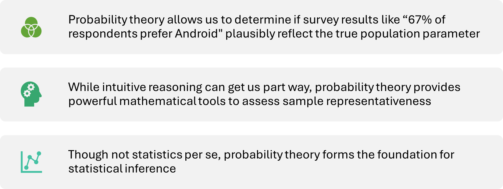

Week 04: Design & Inference
Date: September 15, 2025
From Squirrels to Significance: A Guide to Research Design & Inference
Week 4
The Core Challenge
Last week: We learned to describe and visualize patterns in our sample.
The Rest of the Course: We want to make claims about the population.
The Problem: How do we know if a pattern we see in our sample (e.g., a difference between groups) is a “real” effect or just random sampling error?
The Solution: We build a statistical model to test our question against the backdrop of randomness.
The Journey of a Research Question
All research starts with a question about the world.
But how do we get from a messy, real-world question to a clean, statistical answer?
Our Journey Today:
Part 1: From Concept to Data (How do we measure what we care about?)
Part 2: The Blueprint for Claims (How do we structure our study?)
Part 3: From Design to Model (How do we analyze our data?)
Part 1: From Concept to Data (Operationalization)
The First & Most Important Choice
Before we can analyze anything, we need data. This means turning an abstract concept into a concrete, measurable variable.
This process is called operationalization.
Your operationalization is your argument for what a concept means in the context of your study.
The Squirrel Gang
Let’s imagine a new study. Our research question is:
Does being aggressively attacked by a campus squirrel for your sandwich increase a student’s acute stress?
Predictor:
squirrel_incident(Attacked vs. Not Attacked).Outcome:
acute_stress.
But what is “acute stress”? As the researcher, how do you measure it?
Turn to the person/people next to you and identify how you would define and measure “stress”.
How Would You Measure “Stress”?
| Method of Measurement | How It Works | Data Generated | What It Really Measures |
| Subjective Self-Report | “On a scale of 0-100, how stressed do you feel right now?” | Continuous (0-100) | The feeling of stress. |
| Autonomic Arousal | Measure heart rate in beats per minute (BPM). | Continuous (e.g., 115 BPM) | The body’s alarm for stress. |
| Cognitive Impairment | “Count backward from 1,084 by 7s.” Measure speed & accuracy. | Continuous (# of errors) | The brain’s processing under stress. |
| Coded Facial Expression | Analyze video for micro-expressions of fear or anger. | Categorical or Ordinal | The face’s expression of stress. |
Part 2: The Blueprint for Claims (Study Design)
The Two Big Claims
Now that we know what we’re measuring, let’s talk about how we structure the study. Your design determines the kind of claim you can make.
An Associational Claim: Two variables are related.
- “People who experience squirrel attacks tend to report higher stress.”
A Causal Claim: A change in one variable causes a change in another.
- “The experience of a squirrel attack causes an increase in stress.”
The 3 Rules of Causality
To earn the right to say “X causes Y,” you must demonstrate three things:
Covariance: X and Y are related.
Temporal Precedence: The cause (X) must happen before the effect (Y).
Internal Validity: There are no other plausible explanations (we’ve ruled out confounds).
The Confounding Variable Problem
A confound is a “third variable” that creates a spurious relationship between your two variables. This is the #1 threat to causal claims.
Classic Example: Ice cream sales are positively correlated with drowning deaths.
The Confound: Summer heat! Hot weather causes both more ice cream sales and more swimming.
The Gold Standard for Defeating Confounds: The Experiment
A True Experiment is the most powerful tool for establishing causality. It has two magic ingredients:
Manipulation: The researcher actively manipulates the Independent Variable (IV).
Random Assignment: Every participant has an equal chance of being in any condition. This breaks the links to potential confounds by distributing them evenly across groups.
Key Design Dimensions
Between-Subjects: Different groups of people get different conditions. We compare Group A vs. Group B.
Within-Subjects: The same group of people experiences all conditions. We compare people to themselves.
Cross-Sectional: All data is collected at a single point in time. (Fails temporal precedence).
Longitudinal: Data is collected from the same people over multiple time points. (Establishes temporal precedence).
A New Dimension - Who Are You Studying?
So far, we’ve focused on what we do with our participants (the design).
But there’s another crucial question: Who are our participants and who do they represent?
Population: The entire group we want to draw conclusions about.
- e.g., All college students in the United States.
Sample: The specific subset of the population that we actually collect data from.
- e.g., 150 undergraduates from our university’s psychology subject pool.
The central question of sampling is generalizability: How well do the findings from our sample apply to the broader population?
The Key Distinction in Sampling
Random Sampling (The Ideal)
Every single member of the target population has an equal chance of being selected for the study.
Why it’s the gold standard: It minimizes systematic bias. In the long run, it produces samples that are highly representative of the population.
Convenience Sampling (The Reality)
The researcher includes people who are easy to reach (e.g., Using undergraduate students, posting a flier in the clinic, etc.)
The Limitation: Our convenience sample may differ from the population in systematic ways (e.g., younger, wealthier, college educated, etc.). Must be thoughtful when generalizing from these samples.
Checkpoint
We have our perfectly designed study to collect stress data from our observations on being on the squirrel hunt (let’s ignore the ethics around knowing squirrels might attack and not interfering).
We’ve moved beyond just describing our sample with means and standard deviations.
Now we have to make an inference. We see a difference in stress between the groups… but how do we know if it’s “real” or just random chance?
To answer this, we need to understand the logic of randomness itself. We need to understand probability.
Descriptives vs. Inference
Moving from simply describing our data
With means and standard deviations
To drawing conclusions about the population
Using inferential statistics
Probability - Understanding Randomness
There are several possible interpretations of probability but they (almost) completely agree on the mathematical rules probability must follow:
\(P(A)\) = Probablity of event A
0 ≤ \(P(A)\) ≤ 1
The Law of Large Numbers
As more observations are collected, the proportion of occurrences with a particular outcome, \(p̂_n\), converges to the probability of that outcome, \(p\).
Example:
As the sample size increases, the sample mean tends to get closer to the population mean
And as the sample size approaches infinity ♾️, the sample mean approaches the population mean
Law of Large Numbers
When tossing a fair coin, if heads comes up on each of the first 10 tosses, what do you think the chance is that another head will come up on the next toss? 0.5, less than 0.5, or more than 0.5?
| H H H H H H H H H H ? |
Law of Large Numbers
When tossing a fair coin, if heads comes up on each of the first 10 tosses, what do you think the chance is that another head will come up on the next toss? 0.5, less than 0.5, or more than 0.5?
| H H H H H H H H H H ? |
Probability is still 0.5
Coin is not “due” for a tail
Important
The common misunderstanding of the LLN is that random processes are supposed to compensate for whatever happened in the past; this is just not true and is also called gambler’s fallacy (or law of averages)
Statistics, Probability & Inference
Think about seeing statistics posted on the news
- Often times polling companies survey a large sample to then make a statement about the population
We assume the sample is representative of the larger population, but how representative?
- This is where probability theory comes in
Probability theory provides tools to assess how likely sample results are if they differ from the true population parameter
Role of Probability Theory
Probability - The 2 main realms
Frequentist
Probability is a long-run frequency of an event
Bayesian
Probability of an event as the degree of belief
Frequentist Approach
Pros
- Objective: the probability of an event is grounded in the world & exist in the physical universe
- Unambiguous: two people can watch the same sequence of events and will come up with the same answer
Frequentist Approach
Cons
Infinity: not possible in the physical world
- What would happen if we flipped a coin an infinite amount of times?
Narrow in scope: although we want to make statements about a single event, we typically are forbidden (see above point about infinity)
- Example: There is a 60% chance that it will rain on Wednesday in Rochester. “There is a category of days for which I predict a 60% chance of rain, and if we look only across those days for which I make this prediction, then on 60% of those days it will actually rain”
Probability Theory as part of the solution
So, How Does This Help Us?
The Frequentist approach gives us a powerful framework: We can test our research hypothesis by asking, “How surprising would our sample data be if there were truly no effect in the long run?”
This question is the foundation for the rest of our journey today.
Part 3: From Design to Model (The Decision Tree)
The Universal Language of Models
Your measurement and design choices create the blueprint for your analysis. They lead you directly to the correct statistical model.
All models we learn this semester can be expressed in R with a simple formula:
Outcome ~ Predictor
A Decision Tree for Your Model 🌳
If your goal is to… COMPARE GROUPS:
Predictor (IV) is Categorical
Outcome (DV) is Continuous
👉 You are in the t-test / ANOVA family of models.
The model looks like:
Continuous_Outcome ~ Categorical_Predictor
If your goal is to… ASSESS AN ASSOCIATION:
Predictor (IV) is Continuous
Outcome (DV) is Continuous
👉 You are in the Correlation / Regression family of models.
The model looks like:
Continuous_Outcome ~ Continuous_Predictor
Data to Models to Inference (NHST)
So we have a model, like: depression_score ~ therapy_group. How do we test it?
We use the Null Hypothesis Significance Testing (NHST) framework:
The Null Hypothesis \(H_0\) : A statement that the predictor has no relationship with the outcome in the population. It is the “null model.”
- \(H_0\) : In the population, there is no difference in depression scores between the therapy and control groups.
therapy_groupdoes not predictdepression_score.
- \(H_0\) : In the population, there is no difference in depression scores between the therapy and control groups.
The Alternative Hypothesis \(H_A\) : Our research hypothesis. The predictor does have a relationship with the outcome.
- \(H_A\) : In the population, there is a difference.
therapy_groupdoes predictdepression_score.
- \(H_A\) : In the population, there is a difference.
The p-value
The p-value tells us how surprising our sample data would be if the null hypothesis (the “no relationship” model) were true for the population.
It’s a measure of the incompatibility between our data and the null model.
- A small p-value (p<.05) suggests that our data are incompatible with the null model. We have evidence to reject the null model and conclude that our predictor is likely related to the outcome.
The statistical test you run (t.test, cor.test, lm) is just the engine that calculates the p-value for your specific model. The logic is always the same.
Synthesis
- Your Statistical Model (and its p-value) tells you if a relationship is statistically significant (i.e., unlikely to be due to random chance).
But…
Your Study Design tells you if you can call that relationship causal (requires random assignment, temporal precedence).
Your Sampling Method tells you if you can generalize that relationship to a broader population.
A p-value or statistical test cannot fix a flawed design!